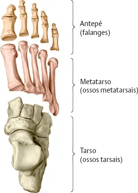
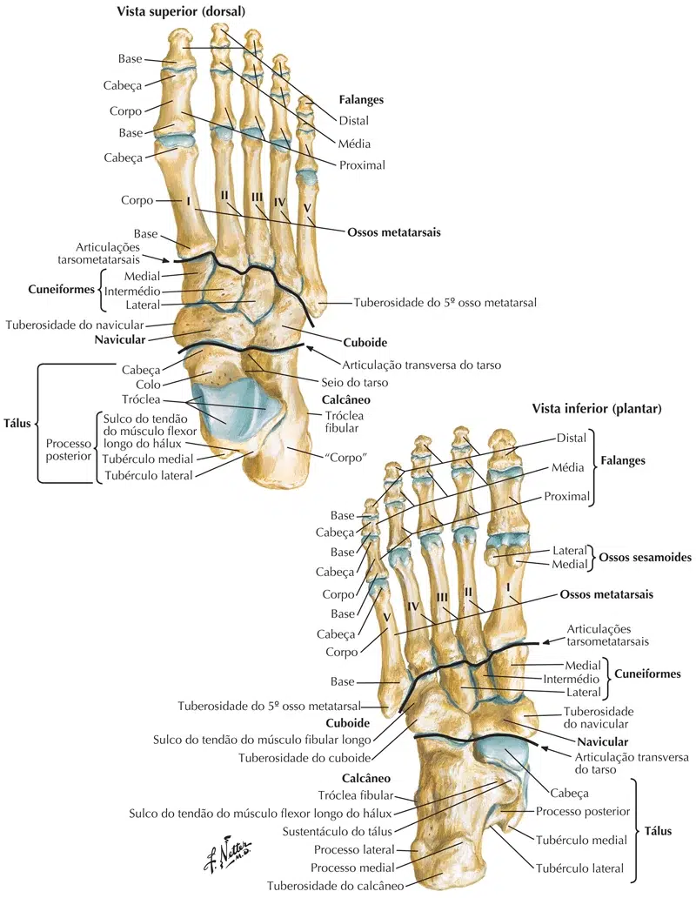
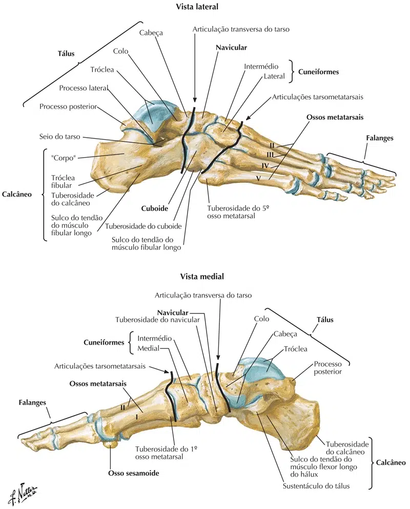
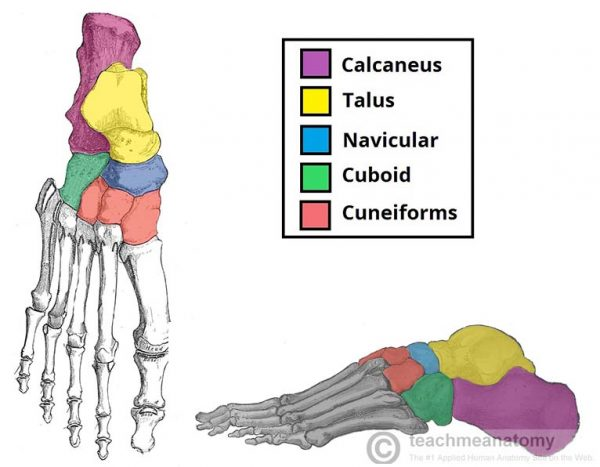

O esqueleto do pé, como o da mão, constitui-se de ossos irregulares articulados entre si:
O ossos do tarso se articulam cinco ossos longos em conjunto denominados metatarsos.
Esses por sua vez, articulam-se as falanges dos dedos.
A descrição feita a seguir é um estudo do esqueleto do pé como um todo e, assim, deve ser acompanhada tendo-se em mãos um esqueleto articulado deste segmento.

Observe a figura e identifique os ossos que constituem o esqueleto do pé.
Ossos do tarso:
Tálus;
Calcâneo;
Navicular;
Cubóide;
Cuneiformes (medial, lateral e intermédio).
Identifique também os ossos metatársicos de l a V;
E reconheça as falanges dos dedos (proximal, média e distal).

O tálus termina anteriormente numa projeção arredondada, a cabeça do tálus, unida ao restante do osso, o corpo, por uma porção estreitada, o colo.
A parte superior do corpo apresenta superfícies articulares que, no conjunto, constituem a tróclea do tálus.
Note em um esqueleto articulado, que estas superfícies se articulam com a tíbia e a fíbula.
O restante do corpo do tálus repousa sobre o calcâneo que, para recebê-lo, apresenta uma projeção medial denominada, por esta razão, sustentáculo do tálus, visível numa vista inferior do esqueleto do pé.
Observe como grande parte do calcâneo ultrapassa posteriormente os limites do tálus.
Entre o tálus e o calcâneo, mais particularmente entre a porção anterior do calcâneo e a cabeça do tálus apresenta-se um verdadeiro canal, ou funil, o seio do tarso.
A cabeça do tálus articula-se com o osso navicular e este com os três cuneiformes (medial, intermédio e lateral) enquanto o calcâneo articula-se com o cubóide.

Observe então, na figura abaixo, que é possível distinguir duas cadeias de ossos no esqueleto do pé:
A primeira; medial, está representada pelo tálus, navicular, cuneiformes (medial, intermédio e lateral), e l, II e III ossos metatársicos;
A segunda; lateral, pelo calcâneo, cubóide e IV e V ossos metatársicos.
A cadeia lateral fica em nível mais baixo que a medial.
Os ossos metatársicos apresentam uma base (extremidade proximal), um corpo e uma cabeça (extremidade distal).
Observe que o I metatársico é o mais volumoso dos cinco, o que denuncia de imediato a sua participação direta como suporte do peso do corpo.
Quanto às falanges, o hálux apresenta apenas duas, o que também pode ocorrer, ocasionalmente, no V dedo.
